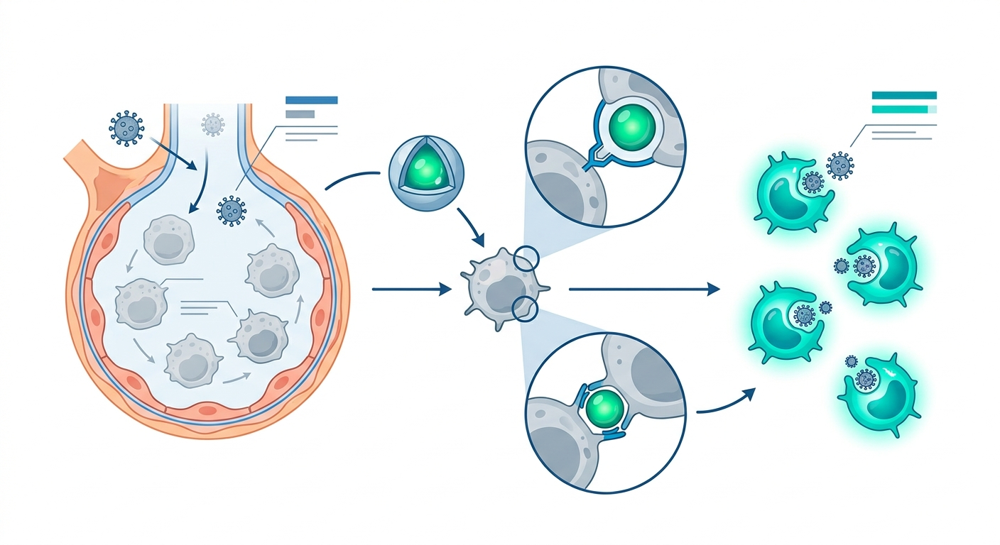

Rebooting the Aging Lung: How a Targeted Nanoparticle Reverses Immunosenescence to Shield the Elderly from Future Pandemics

As we age, our lungs undergo a quiet, dangerous surrender. It is not just that they lose their elasticity; their immune defenses slowly fall asleep. This decline, known as immunosenescence, turns routine respiratory infections into existential threats for the elderly. While a healthy twenty-year-old’s immune system easily recognizes and defeats a mutated strain of influenza, an eighty-year-old’s system often fails to respond even to a direct vaccine. Standard vaccines act like a drill sergeant yelling orders at a deaf platoon—the message is there, but the target cells simply cannot hear it. Now, a team of researchers has developed a molecular hearing aid that doesn't just amplify the signal, but actively rejuvenates the local tissue to fight off viral threats.
Writing in Science Immunology, the researchers unveiled AMnESTI (Alveolar Epithelial Cell-Targeted Manganese-Complexed Liposome Encapsulating a STING Agonist). Think of it as an ultra-precise, inhalable nanotech delivery vehicle designed to slip past the body's peripheral defenses and target the very lining of the lung's air sacs—the alveolar epithelial cells (AECs). For years, immunologists focused almost exclusively on treating immune cells directly. But the creators of AMnESTI realized that the structural cells lining our lungs act as the primary "air traffic controllers" of local immunity. By targeting these structural cells, the therapy wakes up the entire microenvironment, transforming a cold, unresponsive senescent lung into a highly vigilant immune fortress.
The secret weapon inside AMnESTI is a STING (Stimulator of Interferon Genes) agonist complexed with manganese, which acts as a powerful chemical supercharger. When inhaled intranasally, these nanoparticles lock onto the AECs and activate the cyclic GMP-AMP synthase (cGAS)-STING pathway—the cell’s ancient, internal smoke detector for viral invasion. This activation triggers a cascade of cellular reinforcements. The lung begins to recruit and multiply elite immune scouts, including plasmacytoid dendritic cells and inflammatory monocytes. Crucially, the treatment simultaneously suppresses regulatory T cells (Tregs), the cellular brakes that often keep the aging immune system too quiet. When the researchers administered a standard, inactivated flu vaccine alongside AMnESTI, the results were stunning: it triggered "heterosubtypic" protection, shielding aged models not just from the specific flu strain in the vaccine, but from entirely different, mutated strains that would normally prove lethal.
For the longevity sector, the implications of this platform are profound. Reversing localized tissue aging represents a paradigm shift in how we approach healthspan extension. Instead of trying to systemically rejuvenate every cell in the human body—a daunting and highly risky task—AMnESTI proves that we can targetedly reboot high-risk organs. If this platform can successfully rejuvenate the lung's immune response to influenza, it could theoretically be adapted for other respiratory threats like RSV, COVID-19, or future pandemic strains. This represents a massive market opportunity for biotech investors looking to fund platform technologies capable of shielding vulnerable, aging populations from the world's most common infectious killers.
However, translating these remarkable preclinical results into human therapies remains a steep and treacherous climb. While AMnESTI worked wonders in mouse models, human lungs are vastly different in scale, branching architecture, and cellular distribution. Furthermore, humans carry decades of "immunological baggage"—pre-existing exposures to various viruses and vaccines—which makes our immune responses far more chaotic and unpredictable than those of clean, laboratory-raised mice. There is also the historical safety concern surrounding STING agonists; overactivating this pathway systemically can trigger dangerous cytokine storms or tissue-damaging inflammation. While AMnESTI’s localized, lung-targeted delivery is designed to mitigate this risk, proving its long-term safety profile in older human cohorts with pre-existing conditions like COPD or asthma will require years of rigorous, expensive clinical trials. Investors and scientists should view this as a brilliant proof-of-concept, but one that is still at the starting line of a very long translational marathon.
Sources & Citations:
Primary Source: AMnESTI reverses age-associated lung immune decline to drive heterosubtypic protection by inactivated influenza vaccines. (Science immunology)
-
['
- Primary Study: Science Immunology (2025). "AMnESTI reverses age-associated lung immune decline to drive heterosubtypic protection by inactivated influenza vaccines." https://doi.org/10.1126/sciimmunol.adz5242 ']